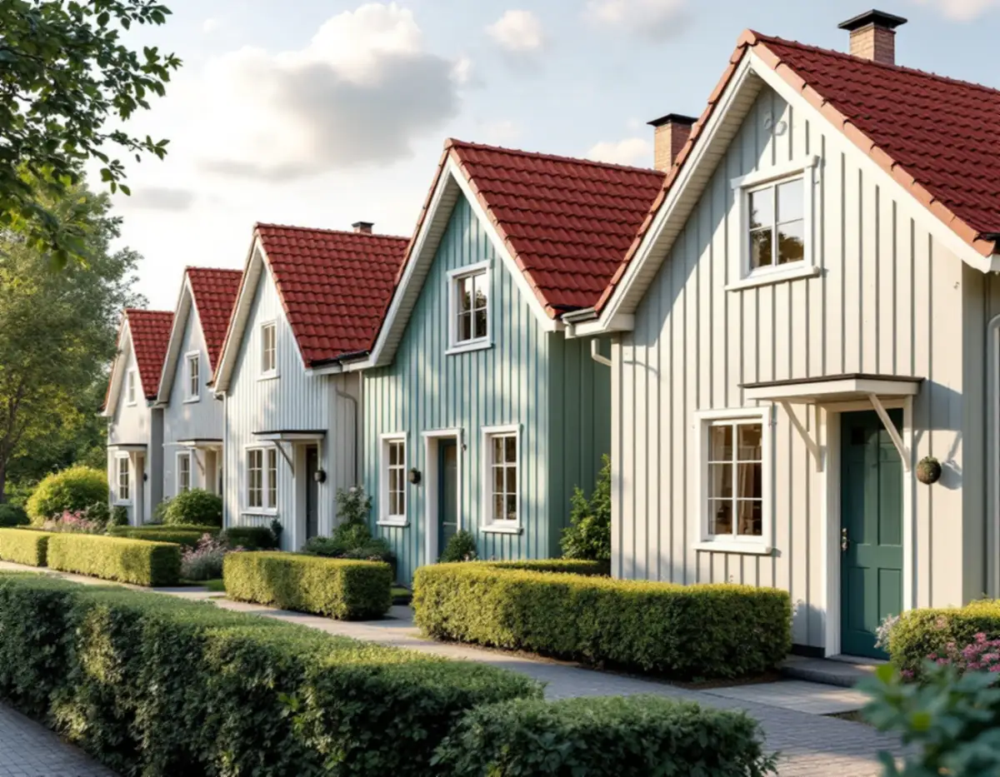
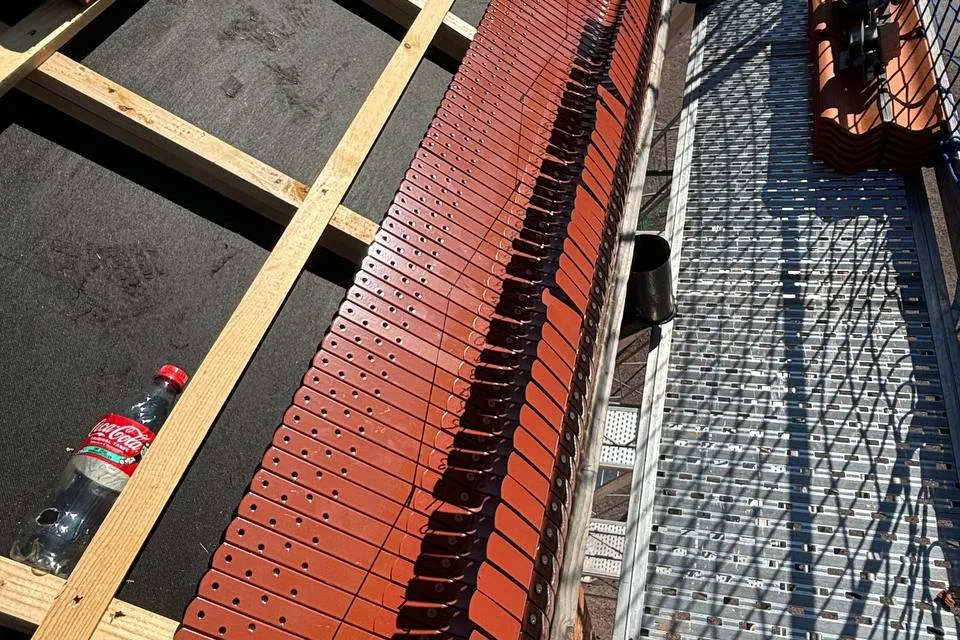

Platsbesök
Vi går igenom taket, vinden och skorstenen och noterar pannornas typ och kulör.
När ett Brommatak ska bytas handlar valet sällan bara om livslängd. På småstugorna i Norra Ängby och Olovslund hörde det röda lerteglet till typritningen, och i stora delar av Stockholm kräver solceller bygglov. Geal Entreprenad AB har sitt kontor i Bromma, byter tak i hela stadsdelen och lämnar ett skriftligt kostnadsförslag efter ett gratis platsbesök.

Stockholms stads vägledning Varsam utveckling av småhus- och villaområden beskriver hur småstugeområdena byggdes ut i regi av stadens småstugebyrå. Pungpinan och Olovslund var först ut, och 1927 stod de första stugorna klara. Därefter följde bland annat Norra Ängby. Kraven var att husen skulle vara billiga och lätta att uppföra, och det ledde till standardisering och kataloger med hustyper.
Enligt vägledningen täcktes taken med enkupigt eller tvåkupigt rött lertegel, och områdenas enhetliga karaktär hänger på volymer, proportioner och takens utformning. Pungpinan, Olovslund och Norra Ängby är dessutom utpekade som riksintressen för kulturmiljövården. Ett nytt tak i betong, i plåt eller i en annan kulör syns därför direkt i en rad av likadana hus.
I slutet av 1970-talet samlade stadsbyggnadskontoret typritningarna från 1927–1957 i en sammanställning, som stöd för den som ville ändra sin stuga. En sådan ritning kan visa takvinkel, takfot och skorstenens läge, vilket är bra underlag när pannor, läkt och plåt ska beställas. Hur äldre tak i stadsdelen renoveras beskrivs under takrenovering i Bromma.

Boverket förklarar att ett byte till ett annat taktäckningsmaterial, till exempel från tegeltak till plåttak, är en fasadändring. Att byta till samma material i samma utförande räknas däremot som underhåll. Sedan 1 december 2025 krävs normalt inget bygglov för fasadändringar på en- och tvåbostadshus, men i Bromma är undantagen många.
Staden skriver att bygglov krävs om åtgärden görs på en byggnad eller inom ett bebyggelseområde som är särskilt kulturhistoriskt värdefullt, eller om detaljplanen eller områdesbestämmelserna har skydd för särskilda värden. Stadsmuseets klassificeringskarta ger en första indikation, men staden påpekar att du kan behöva kontakta Stadsmuseet för en bedömning. Detaljplanen finns i e-tjänsten Bygg- och plantjänsten.
Det enklaste beslutet är ofta att lägga nytt lertegel av samma typ som det gamla. Då uppstår ingen lovfråga, och huset behåller sitt uttryck. Vill du byta till betong eller plåt går vi igenom klassningen och detaljplanen innan något beställs. Skillnaderna mellan materialen finns i tegel, betong eller plåt.
Stockholms stad skriver att det krävs bygglov för solceller på en byggnad inom eller i anslutning till Försvarsmaktens riksintresse i ett område med detaljplan, och att det därför behövs bygglov i stora delar av Stockholm. En anledning är riksintresset för väderradarn i Håtuna. Enligt Boverket gäller undantaget för anläggningar på högst 11 kilowatt inte när det finns en utökad lovplikt.
Därför lönar det sig att bestämma sig före takbytet. Ska panelerna upp inom några år kan infästningarna planeras medan läkt och underlag ändå är frilagda, och ansökan kan skickas in under tiden. Staden hänvisar till Stockholms solkarta för en första uppskattning av hur mycket el taket kan ge, och till energi- och klimatrådgivningen.
Skatteverket påpekar att du inte kan få rotavdrag för en solcellsinstallation som redan har gett skattereduktion för grön teknik. Själva takbytet ger rotavdrag på vanligt sätt. Mer om paneler på villatak finns under solceller på taket.
Småstugorna står tätt, i grupper av hus av samma typ, ofta i gatuliv eller bakom förgårdsmark med häckar. Det styr var ställning, container och nya pannor kan stå. Vi planerar etableringen vid platsbesöket, så att häckar och förgårdsmark skonas och grannarna vet hur länge ställningen står.
Under bytet hålls huset tätt varje kväll. När det gamla teglet är nere syns råsponten i dagsljus, och skadade brädor byts innan ny underlagspapp och läkt läggs. Plåten runt skorstenen, ränndalarna och fotplåten görs om, och hängrännor och stuprör byts om de är lika gamla som taket.
Kontoret på Byggmästarvägen i Bromma gör det nära till platsbesök och uppföljning. Våra övriga tjänster i stadsdelen finns under takläggare i Bromma.
Vi går igenom taket, vinden och skorstenen och noterar pannornas typ och kulör.
Stadsmuseets karta och detaljplanen kontrolleras innan materialet väljs.
Samma tegel igen eller ett annat material, och om solceller ska förberedas.
Rivning, underlag, pannor, plåt och ställning står var för sig i ett skriftligt förslag.
Gammalt tak rivs, råsponten ses över och nytt underlag, läkt och nya pannor läggs.
Vi går igenom taket och plåtdetaljerna tillsammans med dig.
Skatteverket räknar det som rotarbete att byta och reparera takpannor, plåttak och hängrännor på ett småhus, liksom att montera och montera ner byggnadsställningar och att byggstäda efter arbetet. Avdraget är 30 procent av arbetskostnaden, högst 50 000 kr per person och år och högst 75 000 kr tillsammans med rutavdrag. Material, resor och bortforsling ger inget avdrag.
Du behöver äga huset medan arbetet utförs och bo i det. Geal drar av ROT direkt på fakturan.
Takets yta och lutning, om nytt lertegel av samma typ ska läggas eller ett annat material, hur mycket råspont som behöver bytas, plåtarbetena kring skorsten och kupor, hur ställningen kan stå på en trång tomt och om infästningar för solceller ska förberedas. En överblick finns i vad kostar ett takbyte, och efter platsbesöket får du ett skriftligt kostnadsförslag.
Byte av tegel-, betong- och plåttak.
Takbyte →Takbyte, takbesiktning och plåtarbeten.
Takläggare i Bromma →Trädgårdsstäder, tegel och funkistak.
Takrenovering i Bromma →Trädgårdsstad, karta och 30 m² inom plan.
Attefallshus i Bromma →Vind, bärande väggar och en andra bostad.
Byggföretag i Bromma →Kulörval och färgtyp i trädgårdsstaden.
Fasadmålning i Bromma →Småspröjs, småstugor och funkis i Bromma.
Fönsterbyte i Bromma →Småstugornas fönster, kitt och linoljefärg.
Fönsterrenovering i Bromma →Kupor, låga tak och bleck i Bromma.
Plåtslagare i Bromma →Trävillor, småstugor och funkisvillor.
Badrumsrenovering i Bromma →Trädgårdsstäder, småstugor och funkis i Bromma.
Fasadrenovering i Bromma →Villor i trädgårdsstäderna och lägenheter i smalhus.
Golvläggare i Bromma →Imkanal, småstugor och trävillor.
Köksrenovering i Bromma →Fasad och interiör i Brommas villastäder.
Målare i Bromma →Verandor, entréer och altaner.
Snickare i Bromma →Småstugor, trädgårdsstad och prickmark.
Tillbyggnad i Bromma →